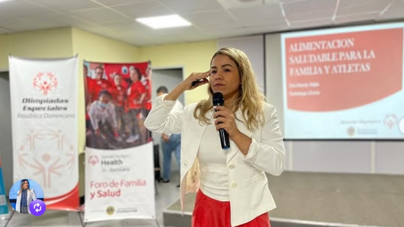
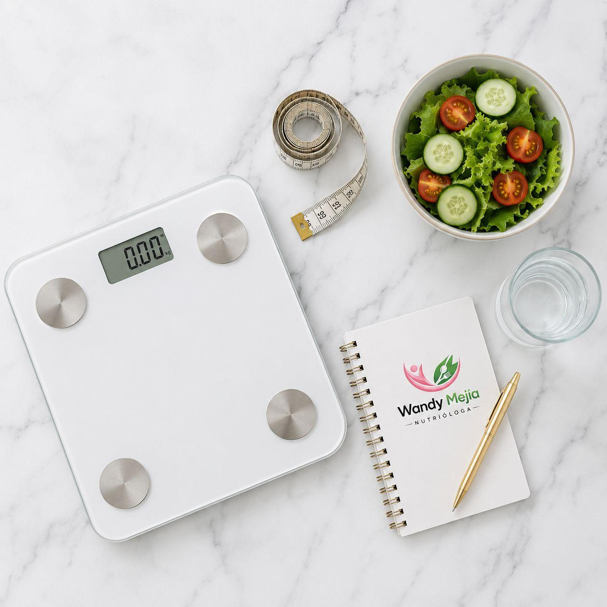
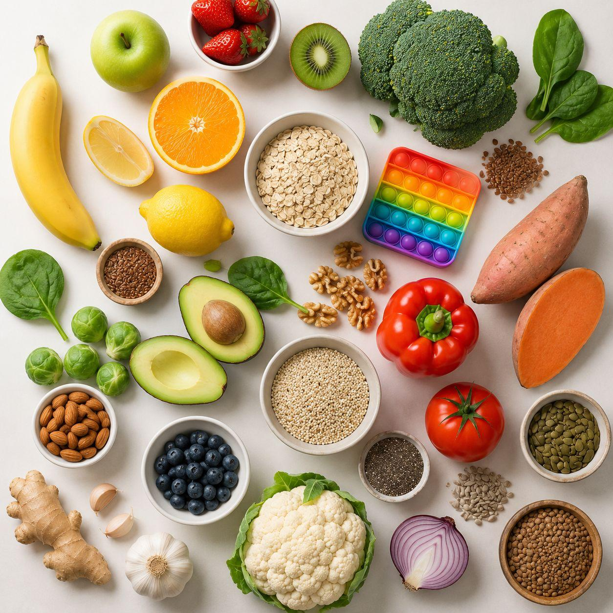
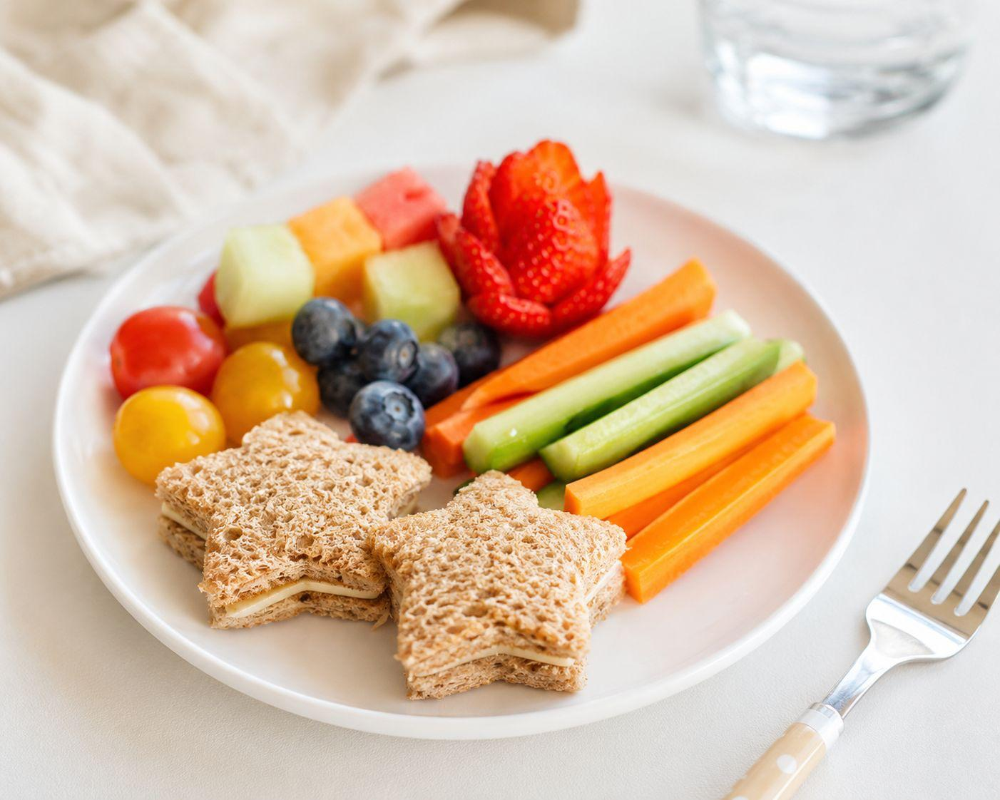

Conoce cada uno de los tratamientos y asesorías que ofrecemos para mejorar tu bienestar integral.
Seguimiento clínico personalizado y directo con la Dra. Wandy Mejía desde la comodidad de tu hogar o lugar de trabajo. Atención online en República Dominicana y el exterior, manteniendo la misma calidez, rigor científico y empatía que en la consulta presencial.
AGENDAR CON LA DRA.
La Dra. Wandy Mejía realiza una evaluación clínica profunda de tu microbiota intestinal, hábitos alimenticios y bioquímica individual. Diseña planes terapéuticos personalizados basados en evidencia científica para restaurar tu salud metabólica, energía y bienestar integral.
AGENDAR CON LA DRA.Tratamiento clínico integral guiado por la Dra. Wandy Mejía para el control del sobrepeso y la obesidad. Nos enfocamos en mejorar los parámetros metabólicos, corregir desequilibrios hormonales y consolidar hábitos sostenibles sin dietas restrictivas ni rebotes.
AGENDAR CON LA DRA.
Evaluación y acompañamiento profesional a cargo de la Dra. Wandy Mejía para asegurar el crecimiento óptimo de niños y adolescentes. Manejo especializado de bajo peso, deficiencias nutricionales, alergias e intolerancias alimentarias en etapas críticas del desarrollo.
AGENDAR CON LA DRA.
La Dra. Wandy Mejía cuenta con una sólida experiencia (incluyendo su labor en el CAID) diseñando protocolos nutricionales específicos para personas dentro del Espectro Autista. Nos enfocamos en corregir la inflamación digestiva, optimizar la absorción de nutrientes y manejar la selectividad severa.
AGENDAR CON LA DRA.
A través de la nutrición clínica funcional basada en evidencia, la Dra. Wandy Mejía desarrolla planes de alimentación orientados a regular el comportamiento, mejorar el enfoque cognitivo y apoyar la estabilidad emocional en niños y adultos diagnosticados con TDAH.
AGENDAR CON LA DRA.Abordaje clínico de la selectividad alimentaria severa infantil. La Dra. Wandy Mejía enseña y aplica técnicas y estrategias conductuales personalizadas para ampliar progresivamente la variedad de la dieta de tus hijos, promoviendo una relación positiva con la comida.
AGENDAR CON LA DRA.La Dra. Wandy Mejía imparte conferencias, charlas corporativas y participa en entrevistas sobre salud funcional, nutrición clínica y autismo. Si deseas invitarla a un evento, ¡está abierta a colaborar!